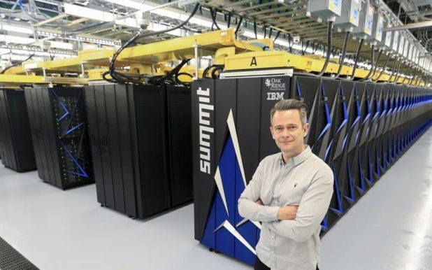

Несколько фактов о компьютерах
-
Американский “Summit”
По состоянию на лето 2019 года звание самого мощного компьютера в мире второй год удерживает американский “Summit”. Его производительность, вычисленная при помощи стандартных тестов “Linapack”, составляет 148 600 000 Гигафлопсов (производительность домашних стационарных компьютеров составляет сотни Гигафлопсов).
“Summit” занимает помещения площадью 520 м2. Собран он из почти 1 000 22-ядерных процессоров. В системе охлаждения суперкомпьютера циркулирует 15 кубометров воды, а энергии он потребляет как примерно 8 000 средних домохозяйств. Стоимость создания “Summit” составила 325 млн. долларов. По числу же суперкомпьютеров лидирует Китай. В этой стране работает 206 таких машин. В США установлено 124 суперкомпьютера, в России их всего 4.